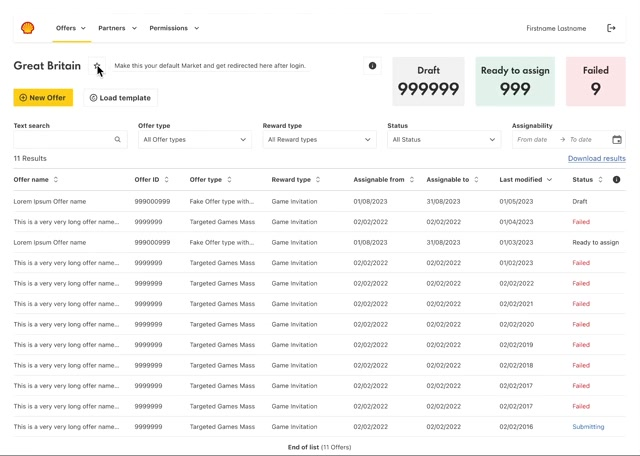

Open on the work that needs attention
Why
Three counters (drafts, ready to assign, failed) sit on top of the market dashboard, and each is a filter. The first thing an offer manager sees is their own queue.
Trade-off
Cross-market views take an extra step. Teams rarely needed them, and the default market can be changed with a star.
